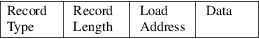

srec_trs80 - Radio Shack TRS-80 object file format specification
This document describes the binary object file format for the Z80-based Radio Shack TRS-80 microcomputers, such as the Model I, II, III, 4, 4D, and 4P. The binary format is generated by the disk-based Assembler/Editor, and used for TRS-DOS program files.
The object file is blocked into records, each of which contains the record type, length, and payload data. For Data and End of File records, the payload starts with two bytes of address in little-endian format. There are four main types of records that are defined. The record types are:
|
• |
Data Record |
|||
|
• |
End of File Record with Execution Transfer |
|||
|
• |
End of File Record without Execution Transfer |
|||
|
• |
Comment |
|||
|
• |
Start Linear Address Record (32-bit format only) |
General Record Format

Record Type.
Each record begins with a single byte Record Type field which specifies the record type of this record. The Record Type field is used to interpret the remaining information within the record. This field is one byte, represented as two hexadecimal characters. The encoding for all the current record types are:
|
1 |
Data Record |
|||
|
2 |
End of File Record with Execution Transfer |
|||
|
3 |
End of File Record without Execution Transfer |
|||
|
5 |
Comment Record |
Record Length
Each record has a single byte Record Length field which specifies the number of bytes of information or data which follows the Record Length field of the record. The maximum value of the Record Length field is hexadecimal “FF” or 255. In the case of Data Records only, Record Length byte values of zero to two are considered to be lengths of 256 to 258, respectively.
|
Address |
Data and End records have a two-byte Address field in little-endian byte order. For Data records, this is the starting address at which to load the remaining payload of the record. In End records, this is the address for the start of execution of the file, or zero if not applicable. | ||
|
Data |
Each record has a variable length Data field, it consists of zero or more bytes. The interpretation of this field depends on the Record Type field. |
This information comes from the "Program Files" section of TRSDOS-II Reference Manual, Tandy Corporation, 1982.
srec_cat
version 1.65
Copyright (C) 1998, 1999, 2000, 2001, 2002, 2003, 2004,
2005, 2006, 2007, 2008, 2009, 2010, 2011, 2012, 2013, 2014,
2018, 2019, 2022 Peter Miller
The srec_cat program comes with ABSOLUTELY NO WARRANTY; for details use the ’srec_cat -VERSion License’ command. This is free software and you are welcome to redistribute it under certain conditions; for details use the ’srec_cat -VERSion License’ command.